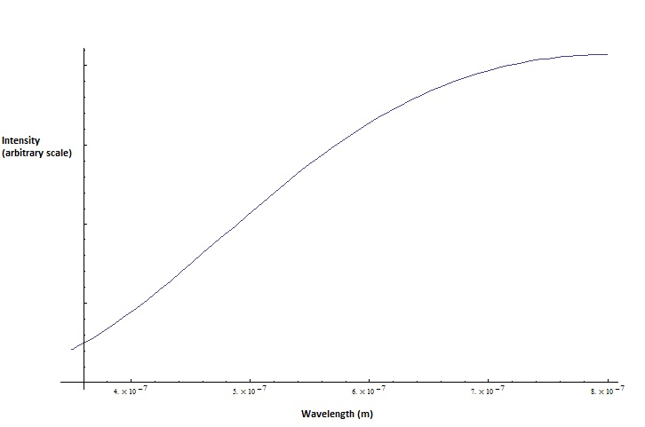

Lightbulb Spectroscopy
In college I had the opportunity to play around with the lab spectrometer after I had finished my work. We had used it earlier in the year to observe the Hydrogen-Deuterium isotope shift and the emission spectra of some different gases, but some of us wondered what would happen if we used it to measure the emissions of a simple light bulb. So one day I brought in two small incandescent bulbs from Radio Shack, one rated at 1.5 volts and another at 12 volts, powered them up, and began to measure the spectra. I was primarily interested in measuring the emissions of the lightbulbs in the visible spectrum which ranges from about 400nm (blue light) to about 700nm (red light).
Measuring the emissions of light bulbs
The spectrometer measures the intensity of each wavelength by turning incident photons into current. The more intense the light, the more current. This current was then converted into a voltage which was measured with a voltmeter, thus the intensity is scaled in volts. I set the spectrometer to sweep through the wavelengths slowly, so I could get a high resolution curve. Eventually, I got the spectra for the two lamps:1.5V Lamp visible light output
9V Lamp visible light output
Both of the lamps have the same basic shape: one strong peak in the yellowish(620nm) region, and a smaller peak in the greenish (500nm) region. I was somewhat surprised by the data. Assuming the lightbulb filaments were tungsten seemed logical that the spectra would resemble a black body spectrum. Seeing that the light bulbs emissions peaked somewhere in the orange-yellow area (~620 nm), I estimated that the bulb's filament was reaching a temperature of about 4800 K. I plotted the theoretical spectrum of black body at that temperature using Planck's Law so that I could have something to compare my spectra to:

Predicted light output for a blackbody @ 4800K
Bad news...my spectra don't look anything like the predicted spectrum. After doing some research I found the supposed emission spectrum of a standard GE lightbulb, and it looks more or less like the blackbody curve above (see the figure below on the left). So...what's wrong with my spectra? Well, while I was on the GE website, I also looked at the emission spectrum for LED lightbulbs (below right figure). Both the LED spectra on the GE website and the peaks I observed in my lamps seemed to share the same overall double-peak shape. So I guess maybe the lamps I used were LED bulbs and not incadescent lamps. Unfortunately, I don't have them anymore and can't check to be sure, but I can't think of any other reason for the spectra to be so different then the theory.
The emission spectrum in the visible range of a typical incandescent bulb.
The emission spectrum of a typical LED bulb on a warm, white setting.
Measuring the Absorption of Colored Dyes
I also brought in some food coloring to try to observe how dyes affect the light emitted by the lamps. I placed a glass slide filled with a small amount of dye in between the light source (I used the 1.5V light bulb) and the spectrometer slit. I recorded the spectra for a both red and green dyes and compared them to the original spectrum of the 1.5V lamp. Then I overlayed all three spectra on top of each other to get a visual idea of how the two colors affected the original spectrum.

Blue: Original (No Slide)
Red: Red Dye
Green: Green Dye
I thought that it would be interesting to calculate the absorbance curves for both of these curves, to see how much of each type of color each dye was subtracting from the lamp's output. I took the original spectra and subtracted the absorbance spectra to come up with the following absorbance spectra:
Red slide absorption spectrum
Green slide absorption spectrum
The red dye seemed to be more effective at blocking a wide range of non-red light, whereas the green dye block wavelengths specifically in the 600-650nm range.